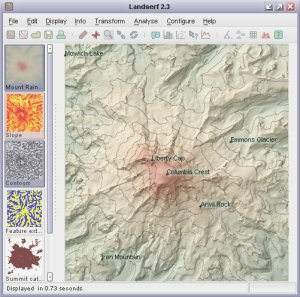

LandSerf is a freely available application for the visualisation and analysis of surfaces. Applications include
visualisation of landscapes; geomorphological analysis; gaming; GIS file conversion; map output; archaeological
mapping and analysis; surface modelling and many others. It runs on any platform that supports Java (Windows,
MacOSX, Unix, Linux etc.)
Features:

- Handles multiple surface models - raster digital elevation models (DEMs), vector Triangulated Irregular Networks (TINs), contours and metric surface networks (MSNs).
- Interactive 3D viewing and 'flythrough' of surfaces on platforms that support OpenGL.
- A range of powerful and interactive visualisation techniques including lighting/shade models, multiple image blending and dynamic graphical query.
- Fully controllable either via its attractive graphical user interface, or via scripting.
- Raster and vector transformation including image rectification and map projection.
- Multi-scale surface processing based on quadratic regression.
- Fractal and polynomial surface generation for modelling and simulation.
- Multi-scale parameter and feature extraction (slope, aspect, curvature etc.).
- Import and export of common raster and vector formats.
- Import and export from and to Garmin GPS receivers.
Documentation
- User's Guide - Description of all LandSerf's features with examples of their use.
- Tutorial - Step by step tutorial on how to use LandSerf.
- 'How to' guides - Instructions on undertaking specific tasks with LandSerf, such as programming, scripting and importing data.
- Theory - Detail on some of the theoretical techniques implemented by LandSerf.
- Third party software - Details of third party software and code and used by LandSerf.
- Changes - Changes since the previously released version of LandSerf.
- 'Add-ons' - Additional utilities that can be added to LandSerf (online only).
Conditions of Use
Source code, bytecode and documentation for LandSerf remain Copyright, Jo Wood, 1996-2008.
You may make copies of this software and associated documentation, provided it is for personal or
educational use and the original documentation remains intact. You must not sell or otherwise charge
for the use of LandSerf.
This software is provided on an "as is" basis, without warranty. The author makes no representation, or
warranty, either express or implied, with respect to the software programs, their quality, accuracy or
fitness for a specific purpose. Therefore the author accepts no liability with respect to loss or damage
caused directly or indirectly by the LandSerf software.
Acknowledgements
This software would be a far poorer piece of work were it not for the valuable feedback from users of
earlier versions. In particular I would like to thank students on the MGI at City University London, Jason Dykes, Aidan Slingsby and Stephanie Marsh also at City.
Jo Wood,
Department of Information Science,
City University,
London EC1V 0HB,
UK
email: jwo 'at' soi.city.ac.uk